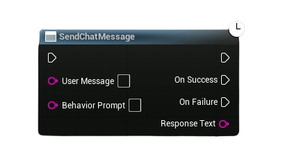

“Simple OpenAI” is a plugin I developed for Unreal Engine 5 that integrates the OpenAI API to send and receive prompts during gameplay. I designed it with two goals in mind: simplicity and versatility, so it can fit seamlessly into any project. Working toward those goals was quite fun and made me much more conscious of my design process.
I had to carefully separate the front-end from the back-end and be deliberate about which variables and functions I exposed to Blueprints.
I had many ideas for additional features, but I chose to keep the scope focused so the plugin remains lightweight and does its core task well.
The plugin is available on FAB, with full setup instructions both there and on my GitHub.
| Game Engine | Unreal Engine 5.5 |
|---|---|
| Version Control | GitHub |
| IDE | JetBrains Rider |
| Platform | Windows |
| FAB | FAB Page |
| GitHub | GitHub Repo |
| Development Duration | 2 weeks |
|---|---|
| Time of Development | Summer 2025 |
| Number of Developers | Solo Developer |
In this example, I’m showcasing one possible use case of the plugin using one of my older projects. Each team is assigned a behavior prompt that matches their character, and they’re then asked to throw back a snappy comment at the opposing team.
This demo also highlights that:
One challenge with working against an API is that responses are never instant, you can’t call a node and immediately expect a result. Because of this, I chose (like many others) to implement asynchronous task. This approach lets the user continue execution and then handle the response cleanly once it arrives. In the end, my node exposed two additional execution outputs to cover both possible scenarios: success and failure.
The main async node exposed to Blueprints
This was made possible by using Unreal’s dynamic multicast delegates, which I called in code depending on the outcome of the request.
DECLARE_DYNAMIC_MULTICAST_DELEGATE_OneParam(FGPTResponseReceived,
const FString&,
ResponseText);
DECLARE_DYNAMIC_MULTICAST_DELEGATE(FGPTResponseFailed);
UPROPERTY(BlueprintAssignable)
FGPTResponseReceived OnSuccess;
UPROPERTY(BlueprintAssignable)
FGPTResponseFailed OnFailure;
To achieve this, I extended UBlueprintAsyncActionBase, which is the standard way to expose asynchronous tasks to Blueprints. Internally, the class creates a transient UObject (UGPTRequestAsyncAction) bound to the calling UWorld or GameInstance, ensuring proper lifetime management:
UGPTRequestAsyncAction* UGPTRequestAsyncAction::CreateAction(
UObject* WorldContextObject,
UGPTMessageList* Ml,
FString Model)
{
UGameInstance* GameInstance = nullptr;
if (WorldContextObject)
{
if (UWorld* World = WorldContextObject->GetWorld())
{
GameInstance = World->GetGameInstance();
}
}
UGPTRequestAsyncAction* Action = NewObject(
GameInstance ? GameInstance : (UObject*)GetTransientPackage());
Action->MessageList = Ml;
Action->Model = Model;
return Action;
}
When activated, the task builds a JSON payload from a UGPTMessageList (a helper class that serializes role/content pairs into the format OpenAI expects) and dispatches the request via Unreal’s FHttpModule. The HTTP request runs off the game thread, and the response is passed back into the async action through a bound callback (HandleResponse).
The OpenAI API requires requests in a structured JSON format, with each entry containing a role (system, user, or assistant) and the corresponding content. To keep this clean, I built a helper UObject, UGPTMessageList, which serializes messages into the correct format.
void UGPTMessageList::AddMessage(const FString& Role, const FString& Content)
{
TSharedPtr<FJsonObject> NewMessage = MakeShareable(new FJsonObject);
NewMessage->SetStringField(TEXT("role"), Role);
NewMessage->SetStringField(TEXT("content"), Content);
Messages.Add(MakeShareable(new FJsonValueObject(NewMessage)));
}
This abstraction means the rest of the code never needs to manually construct JSON fields for role/content pairs. You just call AddMessage("user", "Hello!") or AddMessage("system", "You are a helpful assistant"). The UGPTMessageList then provides the correctly formatted TArray<TSharedPtr<FJsonValue>> to insert directly into the request payload:
if (IsValid(MessageList) && !MessageList->GetMessages().IsEmpty())
{
Json->SetArrayField(TEXT("messages"), MessageList->GetMessages());
}
The end result is a clean and flexible way to build conversations while maintaining OpenAI’s expected schema.
In the callback, I deserialize the JSON using FJsonSerializer, extract the assistant’s reply, and then broadcast it back to Blueprint via the multicast delegate. This design avoids blocking the game thread, and ensures the result can be consumed directly in Blueprints through clean OnSuccess and OnFailure execution outputs:
FString JsonStr = Response->GetContentAsString();
TSharedPtr<FJsonObject> Json;
TSharedRef<TJsonReader<>> Reader = TJsonReaderFactory<>::Create(JsonStr);
if (FJsonSerializer::Deserialize(Reader, Json) && Json.IsValid())
{
const TArray<TSharedPtr<FJsonValue>>* Choices;
if (Json->TryGetArrayField(TEXT("choices"), Choices) && Choices->Num() > 0)
{
TSharedPtr<FJsonObject> First = (*Choices)[0]->AsObject();
if (First.IsValid())
{
TSharedPtr<FJsonObject> MessageObj = First->GetObjectField(TEXT("message"));
if (MessageObj.IsValid())
{
FString Reply = MessageObj->GetStringField(TEXT("content"));
OnSuccess.Broadcast(Reply);
UE_LOG(LogSimpleOpenAI, VeryVerbose, TEXT("[SimpleOpenAI] Received reply: %s"), *Reply);
return;
}
}
}
}
An additional benefit of this approach is decoupling: the networking layer (request/response handling) is fully separated from the Blueprint interface. The Blueprint developer only sees a high-level async node with clear success/failure flows, while the underlying complexity of HTTP setup, JSON parsing and error handling is entirely encapsulated.
Authentication is handled via a Bearer token passed in the Authorization header. Instead of exposing the key in Blueprints or hardcoding it in source, the plugin integrates with Unreal’s Project Settings system through USimpleOpenAISettings.
Developers enter their API key once in the editor under Project Settings → Plugins → Simple OpenAI, and it is automatically retrieved at runtime:
const USimpleOpenAISettings* Settings = GetDefault<USimpleOpenAISettings>();
const FString& ApiKey = Settings->ApiKey;
if (ApiKey.IsEmpty())
{
UE_LOG(LogSimpleOpenAI, Warning, TEXT("[SimpleOpenAI] API key not set in project settings!"));
OnFailure.Broadcast();
return;
}
Request->SetHeader("Authorization", FString::Printf(TEXT("Bearer %s"), *ApiKey));
To further support debugging, USimpleOpenAISettings also implements a TestApiKey() function, which issues a request against the /v1/models endpoint. This allows developers to verify their key is valid directly from the settings panel, without having to run a full Blueprint flow:
void USimpleOpenAISettings::TestApiKey() const
{
UE_LOG(LogSimpleOpenAI, Log, TEXT("[SimpleOpenAI] Testing API key..."));
FHttpModule& Http = FHttpModule::Get();
TSharedRef<IHttpRequest, ESPMode::ThreadSafe> Request = Http.CreateRequest();
Request->SetURL(TEXT("https://api.openai.com/v1/models"));
Request->SetVerb("GET");
Request->SetHeader("Authorization", FString::Printf(TEXT("Bearer %s"), *ApiKey));
Request->OnProcessRequestComplete().BindLambda([](FHttpRequestPtr Req, FHttpResponsePtr Resp, bool bSuccess)
{
if (!bSuccess || !Resp.IsValid())
{
UE_LOG(LogSimpleOpenAI, Warning, TEXT("[SimpleOpenAI] Test API request failed."));
return;
}
if (Resp->GetResponseCode() == 200)
{
UE_LOG(LogSimpleOpenAI, Display, TEXT("[SimpleOpenAI] API Test Success"));
}
else
{
UE_LOG(LogSimpleOpenAI, Warning, TEXT("[SimpleOpenAI] API Test failed with code %d: %s"),
Resp->GetResponseCode(), *Resp->GetContentAsString());
}
});
Request->ProcessRequest();
}
The check against Resp->GetResponseCode() == 200 is verifying that the server returned a standard HTTP 200 OK response, meaning the request was successful and the API key is valid. Other codes (e.g., 401 Unauthorized, 429 Too Many Requests, or 500-level server errors) indicate different failure scenarios and are logged accordingly for debugging.
Through FSimpleOpenAISettingsCustomization, this test can even be triggered with a single button press in the editor, making it easy to validate the integration without touching code or Blueprints.
Beyond simple message handling, the UGPTChatComponent allows developers to attach persistent behavior to any Actor in the world. By enabling dialogue history (bSaveDialogueHistory) and defining a Behavior Prompt, each Actor can maintain its own unique conversational context. This design means that an NPC can be given a personality, memory, and role-specific instructions without requiring additional state management in Blueprints.
From the user’s point of view, this results in a minimal setup workflow:
An important piece of usability is the plugin’s dedicated Project Settings panel. Developers configure everything in one place under Project Settings → Plugins → Simple OpenAI. Here they can:
This integration means developers no longer need to hardcode credentials or manage them in Blueprints. Once configured, every async task automatically pulls the key and model settings at runtime.